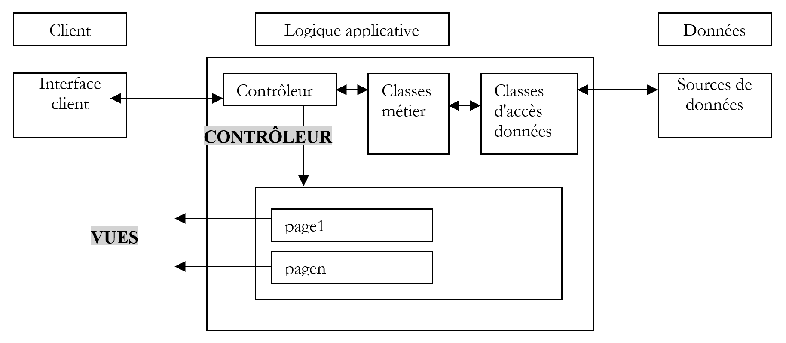
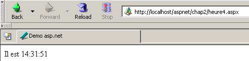
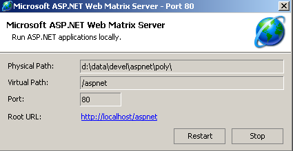

3. Introduction au développement web ASP.NET
3.1. Introduction
Le chapitre précédent a présenté les principes du développement web qui sont indépendants du langage de programmation utilisé. Actuellement, trois technologies dominent le marché du développement web :
- J2EE qui est une plate-forme de développement Java. Associée à la technologie Struts, installée sur différents serveurs d'application, la plate-forme J2EE est utilisée principalement dans les grands projets. Du fait du langage utilisé - Java - une application J2EE peut fonctionner sur les principaux systèmes d'exploitation (Windows, Unix, Linux, Mac OS, ...)
- PHP qui est un langage interprété lui aussi indépendant du système d'exploitation. Contrairement à Java, ce n'est pas un langage orienté objet. Cependant la version PHP5 devrait introduire l'objet dans le langage. D'accès simple, PHP est largement utilisé dans les petits et moyens projets.
- ASP.NET qui est une technologie ne fonctionnant que sur les machines Windows disposant de la plate-forme .NET (XP, 2000, 2003, ...). Le langage de développement utilisé peut être tout langage compatible .NET, c.a.d. plus d'une dizaine, à commencer par les langages de Microsoft (C#, VB.NET, J#), Delphi de Borland, Perl, Python, ...
Le chapitre précédent a présenté de courts exemples pour chacune de ces trois technologies. Ce document s'intéresse au développement Web ASP.NET avec le langage VB.NET. Nous supposons que ce langage est connu. Ce point est important. Nous ne nous intéressons ici uniquement à son utilisation dans le contexte du développement web. Explicitons davantage ce point en parlant de la méthodologie MVC de développement web.
Une application web respectant le modèle MVC sera architecturée de la façon suivante :

Une telle architecture, appelée 3-tiers ou à 3 niveaux cherche à respecter le modèle MVC (Model View Controller) :
- l'interface utilisateur est le V (la vue)
- la logique applicative est le C (le contrôleur)
- les sources de données sont le M (Modèle)
L'interface utilisateur est souvent un navigateur web mais cela pourrait être également une application autonome qui via le réseau enverrait des requêtes HTTP au service web et mettrait en forme les résultats que celui-ci lui envoie. La logique applicative est constituée des scripts traitant les demandes de l'utilisateur. La source de données est souvent une base de données mais cela peut être aussi de simples fichiers plats, un annuaire LDAP, un service web distant,... Le développeur a intérêt à maintenir une grande indépendance entre ces trois entités afin que si l'une d'elles change, les deux autres n'aient pas à changer ou peu.
- On mettra la logique métier de l'application dans des classes séparées de la classe qui contrôle le dialogue demande-réponse. Ainsi le bloc [Logique applicative] ci-dessus pourra être constitué des éléments suivants :

Dans le bloc [Logique Applicative], on pourra distinguer
- la classe contrôleur qui est la porte d'entrée de l'application.
- le bloc [Classes métier] qui regroupe des classes nécessaires à la logique de l'application. Elles sont indépendantes du client.
- le bloc [Classes d'accès aux données] qui regroupe des classes nécessaires pour obtenir les données nécessaire à la servlet, souvent des données persistantes (BD, fichiers, service WEB, ...)
- le bloc des pages ASP constituant les vues de l'application.
Dans les cas simples, la logique applicative est souvent réduite à deux classes :
- la classe contrôleur assurant le dialogue client-serveur : traitement de la requête, génération des diverses réponses
- la classe métier qui reçoit du contrôleur des données à traiter et lui fournit en retour des résultats. Cette classe métier gère alors elle-même l'accès aux données persistantes.
La spécifité du développement web repose sur l'écriture de la classe contrôleur et des pages de présentation. Les classes métier et d'accès aux données sont des classes .NET classiques utilisables aussi bien dans une application web que dans une application windows ou même de type console. L'écriture de ces classes nécessite de bonnes connaissance de la programmation objet. Dans ce document, elles seront écrites en VB.NET aussi supposons-nous que ce langage est maîtrisé. Dans cette perspective, il n'y a pas lieu de s'apesantir plus que nécessaire sur le code d'accès aux données. Dans la quasi totalité des livres sur ASP.NET, un chapitre est consacré à ADO.NET. Le schéma ci-dessus montre que l'accès aux données est fait par des classes .NET tout à fait classiques qui ignorent qu'elles sont utilisées dans un contexte web. Le contrôleur, qui est le chef d'équipe de l'application web, n'a pas à se soucier d'ADO.NET. Il doit savoir simplement à quelle classe il doit demander les données dont il a besoin et comment les demander. C'est tout. Mettre du code ADO.NET dans le contrôleur n'est pas conforme au concept MVC expliqué ci-dessus et nous ne le ferons pas.
3.2. Les outils
Ce document est destiné à des étudiants, aussi allons-nous travailler avec des outils gratuits téléchargeables sur internet :
- la plate-forme .NET (compilateurs, documentation)
- l'environnement de développement WebMatrix qui amène avec lui le serveur web Cassini
- différents SGBD (MSDE, MySQL)
Le lecteur est invité à consulter l'annexe "Outils du web" qui indique où trouver et comment installer ces différents outils. La plupart du temps, nous n'aurons besoin que de trois outils :
- un éditeur de texte pour écrire les applications web.
- un outil de développement VB.NET pour écrire le code VB lorsque celui-ci est important. Ce type d'outil offre en général une aide à la saisie de code (complétion automatique de code), le signalement des erreurs syntaxiques soit dès la frappe du code, soit lors de la sa compilation.
- un serveur web pour tester les applications web écrites. On prendra Cassini dans ce document. Le lecteur disposant du serveur IIS pourra remplacer Cassini par IIS. Ils sont tous les deux compatibles .NET. Cassini est cependant limité pour répondre aux seules demandes locales (localhost) alors que IIS peut répondre aux requêtes de machines externes.
Un excellent environnement commercial pour développer en VB.NET est Visual Studio.NET de Microsoft. Cet IDE très riche permet de gérer toutes sortes de documents (code VB.NET, documents HTML, XML, feuilles de style, ...). Pour l'écriture de code, il apporte l'aide précieuse de la "complétion" automatique de code. Ceci dit, cet outil qui améliore sensiblement la productivité du développeur a le défaut de ses qualités : il enferme le développeur dans un mode de développement standard certes efficace mais pas toujours approprié.
Il est possible d'utiliser le serveur Cassini en-dehors de [WebMatrix] et c'est ce que nous ferons souvent. L'exécutable du serveur se trouve dans <WebMatrix>\<version>\WebServer.exe où <WebMatrix> est le répertoire d'installation de [WebMatrix] et <version> son n° de version :

Ouvrons une fenêtre Dos et positionnons-nous dans le dossier du serveur Cassini :
E:\Program Files\Microsoft ASP.NET Web Matrix\v0.6.812>dir
...
29/05/2003 11:00 53 248 WebServer.exe
...
Lançons [WebServer.exe] sans paramètres :

Le panneau ci-dessus nous indique que l'application [WebServer/Cassini] admet trois paramètres :
- /port : n° de port du service web. Peut-être quelconque. A par défaut la valeur 80
- /path : chemin physique d'un dossier du disque
- /vpath : dossier virtuel associé au dossier physique précédent.
Nous placerons nos exemples dans une arborescence de fichiers de racine P avec des dossiers chap1, chap2, ... pour les différents chapitres de ce document. Nous associerons à ce dossier physique P, le chemin virtuel V. Aussi lancerons-nous Cassini avec la commande Dos suivante :
Par exemple, si on veut que la racine physique du serveur soit le dossier [D:\data\devel\aspnet\poly] et sa racine virtuelle [aspnet], la commande Dos de lancement du serveur web sera :
On pourra mettre cette commande dans un raccourci. Une fois lancé Cassini installe une icône dans la barre des tâches. En double-cliquant dessus, on a accès à un panneau Arrêt/Marche du serveur :

Le panneau rappelle les trois paramètres avec lesquels il a été lancé. Il offre deux boutons d'arrêt/marche ainsi qu'un lien de test vers la racine de son arborescence web. Nous le suivons. Un navigateur est ouvert et l'URL [http://localhost/aspnet] demandée. Nous obtenons le contenu du dossier indiqué dans le champ [Physical Path] ci-dessus :

Dans l'exemple, l'URL demandée correspond à un dossier et non à un document web, aussi le serveur a-t-il affiché le contenu de ce dossier et non un document web particulier. Si dans ce dossier, il existe un fichier appelé [default.aspx], celui-ci sera visualisé. Construisons par exemple, le fichier suivant et plaçons-le dans la racine de l'arborescence web de Cassini (d:\data\devel\aspnet\poly ici) :
Demandons maintenant l'URL [http://localhost/aspnet] avec un navigateur :

On voit qu'en réalité c'est l'URL [http://localhost/aspnet/default.aspx] qui a été affichée. Dans la suite du document, nous indiquerons comment Cassini doit être configuré par la notation Cassini(path,vpath) où [path] est le nom du dossier racine de l'arborescence web du serveur et [vpath] le chemin virtuel associé. On se rappellera qu'avec le serveur Cassini(path,vpath), l'url [http://localhost/vpath/XX] correspond au chemin physique [path\XX]. Nous placerons tous nos documents sous une racine physique que nous appellerons <webroot>. Ainsi nous pourrons parler du fichier <webroot>\chap2\here1.aspx. Pour chaque lecteur cette racine <webroot> sera un dossier de sa machine personnelle. Ici les copies d'écran montreront que ce dossier est souvent [d:\data\devel\aspnet\poly]. Ce ne sera cependant pas toujours le cas, les tests ayant été faits sur des machines différentes.
3.3. Premiers exemples
Nous allons présenter des exemples simples de page web dynamique créée avec VB.NET. Le lecteur est invité à les tester afin de vérifier que son environnement de développement est correctement installé. Nous allons découvrir qu'il y a plusieurs façons de construire une page ASP.NET. Nous en choisirons une pour la suite de nos développements.
3.3.1. Exemple de base - variante 1
Outils nécessaires : un éditeur de texte, le serveur Web Cassini
Nous reprenons l'exemple du chapitre précédent. Nous construisons le fichier [heure1.aspx] suivant :
<html>
<head>
<title>Demo asp.net </title>
</head>
<body>
Il est <% =Date.Now.ToString("T") %>
</body>
</html>
Ce code est du code HTML avec une balise spéciale <% ... %>. A l'intérieur de cette balise, on peut mettre du code VB.NET. Ici le code
produit une chaîne de caractères C représentant l'heure du moment. La balise <% ... %> est alors remplacée par cette chaîne de caractères C. Ainsi si C est la chaîne 18:11:01, la ligne HTML contenant le code VB.NET devient :
Plaçons le code précédent dans le fichier [<webroot>\chap2\heure1.aspx]. Lançons Cassini(<webroot>,/aspnet) et demandons avec un navigateur l'URL [http://localhost/aspnet/chap2/heure1.aspx] :

Une fois obtenu ce résultat, nous savons que l'environnement de développement est correctement installé. La page [heure1.aspx] a été compilée puisqu'elle contient du code VB.NET. Sa compilation a produit un fichier dll qui a été stocké dans un dossier système puis exécuté par le serveur Cassini.
3.3.2. Exemple de base - variante 2
Outils nécessaires : un éditeur de texte, le serveur Web Cassini
La document [heure1.aspx] mélange code HTML et code VB.NET. Dans un exemple aussi simple, cela ne pose pas problème. Si on est amené à inclure davantage de code VB.NET, on souhaitera séparer davantage le code HTML du code VB. Cela peut se faire en regroupant le code VB à l'intérieur d'une balise <script> :
<script runat="server">
' calcul des données à afficher par le code HTML
...
</script>
<html>
....
' affichage des valeurs calculées par la partie script
</html>
L'exemple [heure2.aspx] montre cette méthode :
<script runat="server">
Dim maintenant as String=Date.Now.ToString("T")
</script>
<html>
<head>
<title>Demo asp.net </title>
</head>
<body>
Il est
<% =maintenant %>
</body>
</html>
Nous plaçons le document [heure2.aspx] dans l'arborescence [<webroot>\chap2\heure2.aspx] du serveur web Cassini(<webroot>,/aspnet) et demandons le document avec un navigateur :

3.3.3. Exemple de base - variante 3
Outils nécessaires : un éditeur de texte, le serveur Web Cassini
Nous poussons plus loin la démarche de séparation du code VB et du code HTML en les mettant dans deux fichiers séparés. Le code HTML sera dans le document [heure3.aspx] et le code VB dans [heure3.aspx.vb]. Le contenu de [heure3.aspx] sera le suivant :
<%@ Page Language="vb" src="heure3.aspx.vb" Inherits="heure3" %>
<html>
<head>
<title>Demo asp.net</title>
</head>
<body>
Il est
<% =maintenant %>
</body>
</html>
Il y a deux différences fondamentales :
- la directive [Page] avec des attributs encore inconnus
- l'utilisation de la variable [maintenant] dans le code HTML alors qu'elle n'est initialisée nulle part
La directive [Page] sert ici à indiquer que le code VB qui va initialiser la page est dans un autre fichier. C'est l'attribut [src] qui indique ce dernier. Nous allons découvrir que le code VB est celui d'une classe qui s'appelle [heure3]. De façon transparente pour le développeur, un fichier .aspx est transformé en classe dérivant d'une classe de base appelée [Page]. Ici, notre document HTML doit dériver de la classe qui définit et calcule les données qu'il doit afficher. Ici c'est la classe [heure3] définie dans le fichier [heure3.aspx.vb]. Aussi doit-on indiquer ce lien parent-fils entre le document VB [heure3.aspx.vb] et le document HTML [heure3.aspx]. C'est l'attribut [inherits] qui précise ce lien. Il doit indiquer le nom de la classe définie dans le fichier pointé par l'attribut [src].
Étudions maintenant le code VB de la page :
Public Class heure3
Inherits System.Web.UI.Page
' données de la page web à afficher
Protected maintenant As String
Private Sub Page_Load(ByVal sender As System.Object, ByVal e As System.EventArgs) Handles MyBase.Load
'on calcule les données de la page web
maintenant = Date.Now.ToString("T")
End Sub
End Class
On notera les points suivants :
- le code VB définit une classe [heure3] dérivée de la classe [System.Web.UI.Page]. C'est toujours le cas, une page web devant toujours dériver de [System.Web.UI.Page].
- la classe déclare un attribut protégé (protected) [maintenant]. On sait qu'un attribut protégé est accessible directement dans les classes dérivées. C'est ce qui permer au document HTML [heure3.aspx] d'avoir accès à la valeur de la donnée [maintenant] dans son code.
- l'initialisation de l'attribut [maintenant] se fait dans une procédure [Page_Load]. Nous verrons ultérieurement qu'un objet de type [Page] est averti par le serveur Web d'un certain nombre d'événements. L'événement [Load] se produit lorsque l'objet [Page] et ses composants ont été créés. Le gestionnaire de cet événement est désigné par la directive [Handles MyBase.Load]
- le nom [XX] du gestionnaire de l'événement peut être quelconque. Sa signature doit elle être celle indiquée ci-dessus. Nous n'expliquerons pas celle-ci pour l'instant.
- on utilise souvent le gestionnaire de l'événement [Page.Load] pour calculer les valeurs des données dynamiques que doit afficher la page web.
Les documents [heure3.spx] et [heure3.aspx.vb] sont placés dans [<webroot>\chap2]. Puis avec un navigateur, on demande l'URL [http://localhost/aspnet/chap2/heure3.aspx] au serveur web(<webroot>,/aspnet) :

3.3.4. Exemple de base - variante 4
Outils nécessaires : un éditeur de texte, le serveur Web Cassini
Nous gardons le même exemple que précédemment mais nous regroupons de nouveau tout le code dans un unique fichier [heure4.aspx] :
<script runat="server">
' données de la page web à afficher
Private maintenant As String
' evt page_load
Private Sub Page_Load(ByVal sender As System.Object, ByVal e As System.EventArgs) Handles MyBase.Load
'on calcule les données de la page web
maintenant = Date.Now.ToString("T")
End Sub
</script>
<html>
<head>
<title>Demo asp.net</title>
</head>
<body>
Il est
<% =maintenant %>
</body>
</html>
Nous retrouvons la séquence de l'exemple 2 :
Cette fois-ci, le code VB a été structuré en procédures. On retrouve la procédure [Page_Load] de l'exemple précédent. On veut montrer ici, qu'une page .aspx seule (non liée à un code VB dans un fichier séparé) est transformée de façon implicite en classe dérivée de [Page]. Aussi peut-on utiliser les attributs, méthodes et événements de cette classe. C'est ce qui est fait ici où on utilise l'événement [Load] de cette classe.
La méthode de test est identique aux précédentes :

3.3.5. Exemple de base - variante 5
Outils nécessaires : un éditeur de texte, le serveur Web Cassini
Comme dans l'exemple 3, on sépare code VB et code HTML dans deux fichiers séparés. Le code VB est placé dans [heure5.aspx.vb] :
Public Class heure5
Inherits System.Web.UI.Page
' données de la page web à afficher
Protected maintenant As String
Private Sub Page_Load(ByVal sender As System.Object, ByVal e As System.EventArgs) Handles MyBase.Load
'on calcule les données de la page web
maintenant = Date.Now.ToString("T")
End Sub
End Class
Le code HTML est placé dans [heure5.aspx] :
<%@ Page Inherits="heure5" %>
<html>
<head>
<title>Demo asp.net</title>
</head>
<body>
Il est
<% =maintenant %>
</body>
</html>
Cette fois-ci, la directive [Page] n'indique plus le lien entre le code HTML et le code VB. Le serveur web n'a plus la possibilité de retrouver le code VB pour le compiler (absence de l'attribut src). C'est à nous de faire cette compilation. Dans une fenêtre dos, nous compilons donc la classe VB [heure5.aspx.vb] :
dos>dir
23/03/2004 18:34 133 heure1.aspx
24/03/2004 09:47 232 heure2.aspx
24/03/2004 10:16 183 heure3.aspx
24/03/2004 10:16 332 heure3.aspx.vb
24/03/2004 14:31 440 heure4.aspx
24/03/2004 14:45 332 heure5.aspx.vb
24/03/2004 14:56 148 heure5.aspx
dos>vbc /r:system.dll /r:system.web.dll /t:library /out:heure5.dll heure5.aspx.vb
Compilateur Microsoft (R) Visual Basic .NET version 7.10.3052.4
Ci-dessus, l'exécutable [vbc.exe] du compilateur était dans le PATH de la machine Dos. S'il ne l'avait pas été, il aurait fallu donner le chemin complet de [vbc.exe] qui se trouve dans l'arborescence du dossier où a été installé SDK.NET. Les classes dérivées de [Page] nécessitent des ressources présentes dans les DLL [system.dll, system.web.dll], d'où la référence de celles-ci via l'option /r du compilateur. L'option /t :library est là pour indiquer qu'on veut produire une DLL. L'option /out indique le nom du fichier à produire, ici [heure5.dll]. Ce fichier contient la classe [heure5] dont a besoin le document web [heure5.aspx]. Seulement, le serveur web cherche les DLL dont il a besoin dans des endroits bien précis. L'un de ces endroits est le dossier [bin] situé à la racine de son arborescence. Cette racine est ce que nous avons appelé <webroot>. Pour le serveur IIS, c'est généralement <lecteur>:\inetpub\wwwroot où <lecteur> est le lecteur (C, D, ...) où a été installé IIS. Pour le serveur Cassini, cette racine correspond au paramètre /path avec lequel vous l'avez lancé. Rappelons que cette valeur peut être obtenue en double-cliquant sur l'icône du serveur dans la barre des tâches :

<webroot> correspond à l'attribut [Physical Path] ci-dessus. Nous créons donc un dossier <webroot>\bin et plaçons [heure5.dll] dedans :

Nous sommes prêts. Nous demandons l'URL [http://localhost/aspnet/chap2/heure5.aspx] au serveur Cassini(<webroot>,/aspnet) :

3.3.6. Exemple de base - variante 6
Outils nécessaires : un éditeur de texte, le serveur Web Cassini
Nous avons montré jusqu'ici qu'une application web dynamique avait deux composantes :
- du code VB pour calculer les parties dynamiques de la page
- du code HTML incluant parfois du code VB pour l'affichage de ces valeurs dans la page. Cette partie représente la réponse qui est envoyée au client web.
La composante 1 est appelée la composante contrôleur de la page et la partie 2 la composante présentation. La partie présentation doit contenir le moins de code VB possible, voire pas de code VB du tout. On verra que c'est possible. Ici, nous montrons un exemple où il n'y a qu'un contrôleur et pas de composante présentation. C'est le contrôleur qui génère lui-même la réponse au client sans l'aide de la composante présentation.
Le code de présentation devient le suivant :
On voit qu'il n'y a plus aucun code HTML dedans. La réponse est élaborée directement dans le contrôleur :
Public Class heure6
Inherits System.Web.UI.Page
Private Sub Page_Load(ByVal sender As System.Object, ByVal e As System.EventArgs) Handles MyBase.Load
' on élabore la réponse
Dim HTML As String
HTML = "<html><head><title>heure6</title></head><body>Il est "
HTML += Date.Now.ToString("T")
HTML += "</body></html>"
' on l'envoie
Response.Write(HTML)
End Sub
End Class
Le contrôleur élabore ici la totalité de la réponse plutôt que les seules parties dynamiques de celle-ci. De plus il l'envoie. Il le fait avec la propriété [Response] de type [HttpResponse] de la classe [Page]. C'est un objet qui représente la réponse faite par le serveur au client. La classe [HttpResponse] dispose d'une méthode [Write] pour écrire dans le flux HTML qui sera envoyé au client. Ici, nous mettons la totalité du flux HTML à envoyer dans la variable [HTML] et nous envoyons celle-ci au client par [Response.Write(HTML)].
Nous demandons l'url [http://localhost/aspnet/chap2/heure6.aspx] au serveur Cassini (<webroot>,/aspnet) :

3.3.7. Conclusion
Par la suite, nous utiliserons la méthode 3 qui place le code VB et le code HTML d'un document Web dynamique dans deux fichiers séparés. Cette méthode a l'avantage de découper une page web en deux composantes :
- une composante contrôleur composée uniquement de code VB pour calculer les parties dynamiques de la page
- une composante présentation qui est la réponse envoyée au client. Elle est composée de code HTML incluant parfois du code VB pour l'affichage des valeurs dynamiques. Nous viserons toujours à avoir le minimum de code VB dans la partie présentation, l'idéal étant de ne pas en avoir du tout.
Comme l'a montré la méthode 5, le contrôleur pourra être compilé indépendamment de l'application web. Cela présente l'avantage de se concentrer uniquement sur le code et d'avoir à chaque compilation la liste de toutes les erreurs. Une fois le contrôleur compilé, l'application web peut être testée. Sans compilation préalable, c'est le serveur web qui fera celle-ci, et alors les erreurs seront signalées une par une. Cela peut être jugé fastidieux.
Pour les exemples qui vont suivre, les outils suivants suffisent :
- un éditeur de texte pour construire les documents HTML et VB de l'application lorsqu'ils sont simples
- un IDE de développement .NET pour construire les classes VB.NET afin de bénéficier de l'aide apportée par ce type d'outil à l'écriture de code. Un tel outil est par exemple CSharpDevelop (http://www.icsharpcode.net). Un exemple d'utilisation est montré dans l'annexe [Les outils du développement web].
- l'outil WebMatrix pour construire les pages de présentation de l'application (cf l'annexe [Les outils du développement web]).
- le serveur Cassini
Tous ces outils sont gratuits.